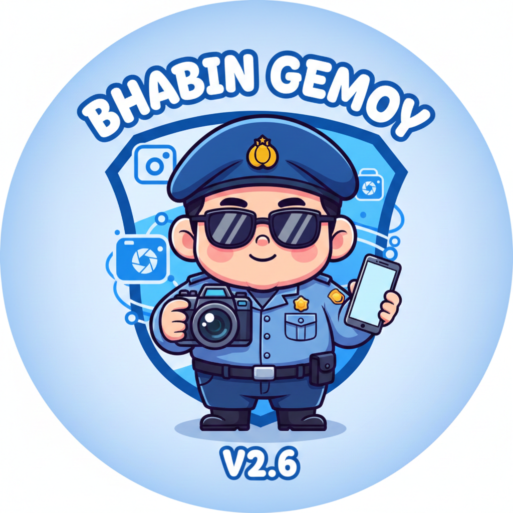

PRO v3.5
Tagihan Milenial v3.5
Kalkulasi otomatis tunggakan, log catatan rencana bayar multi-entry, dan dashboard real-time.
Buka ToolTimestamp Progege
Geotagging foto lapangan v2.6 dengan watermark otomatis untuk dokumentasi tugas Polri.
Buka Tool
IDE HUB
Command Center
Pusat kendali ide dan manajemen project Gibikey Studio (Tampilan lebe gaga).
Buka ToolGibikey Karaoke
Player karaoke neon style tanpa iklan untuk melepas penat setelah tugas lapangan.
Mulai Karaoke
Polri
Ketapang Khair v2.0
Monitoring ketahanan pangan. Fitur khusus edit tanggal dan rekap data.
Polri
Kesiapsiagaan
Manajemen kesiapan personel PC. Monitoring kehadiran dan siaga regu.

Bhabin Gemoy
Database warga binaan dan profil desa khusus Bhabinkamtibmas Polsek Tolinggula.
Public
Makelar Gorontalo
Platform jual-beli mobil, motor, & properti real-time berbasis Supabase. Verifikasi KTP/Selfie.
Kunjungi Platform